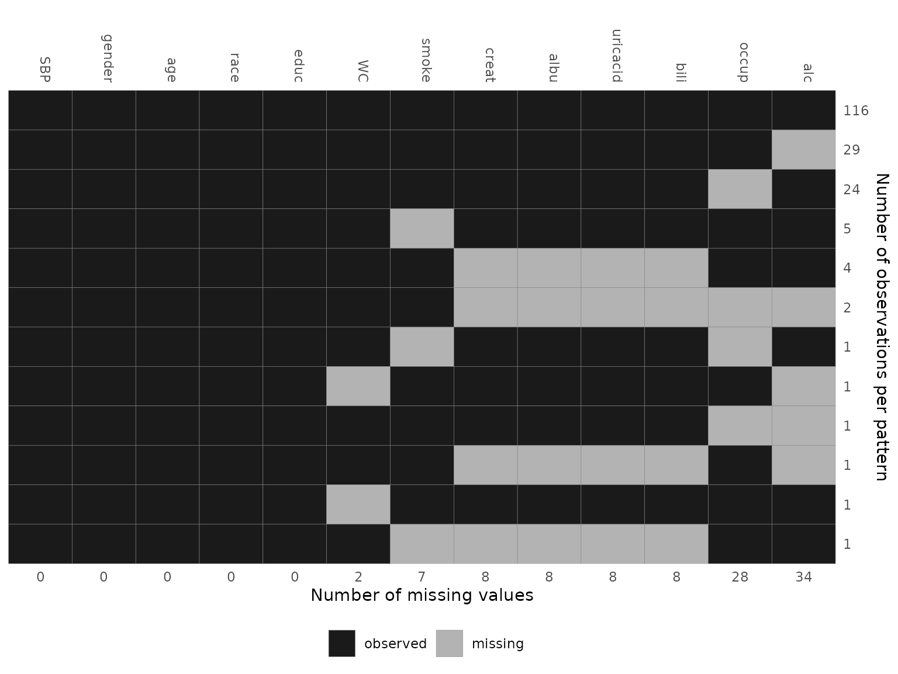

Visualizing Incomplete Data
2020-06-20
Source:vignettes/VisualizingIncompleteData.Rmd
VisualizingIncompleteData.RmdWhen analysing data with missing values it is important to be familiar with the variables of interest, i.e., to know their measurement level and distribution, as well as the amount of missing values per variable, and to investigate the pattern of missing values.
Currently, the package JointAI has two functions to help the exploration of incomplete data.
In this vignette, we use the NHANES data and the
simLong data, that are part of the JointAI
package. For more info on these datasets, check the help files for the
NHANES and for the
simLong data or go to the web page of the
National Health and Nutrition Examination Survey (NHANES).
Visualize the distribution of each variable
Using plot_all(), an array of histograms (for continuous
variables and dates) and bar plots (for categorical variables) can be
obtained.

par(op)Note: Here, we are looking at the marginal distribution of each variable. Since missing values are (usually) imputed conditionally on other variables, marginal plots can only be used as an indication of what type of imputation model (e.g., normal vs non-normal) is appropriate.
Plot titles: proportion of missing values
The argument allNA allows to select whether the
proportion of missing values is given only for incomplete variables or,
by setting allNA = TRUE, for all variables.
Changing colors
The colour of the bars and their border can be controlled with the
arguments fill and border.
Layout
The number of rows and columns of the plot layout is determined
automatically depending on the number of variables in the data but can
be overwritten using nrow and/or ncol.
Additional arguments
It is also possible to provide some of the other arguments of hist()
or barplot().
For example:
Multi-level data
When the data has a multi-level structure, e.g., subjects are nested
within hospitals, or subjects have been measured repeatedly as in the
simLong data, the level of each variable can be taken into
account by specifying the names of the grouping variables (“id”
variables) via the argument idvars.
par(mar = c(2.5, 3, 2.5, 1), mgp = c(2, 0.8, 0))
plot_all(simLong, allNA = TRUE, fill = '#e30f41', border = '#34111b',
ncol = 3, breaks = 30, idvars = "ID") The information to which level a variable belongs is added to the title
of each plot (“lvlone” refers to the first level, for which there is no
grouping variable). Variables belonging to higher levels (e.g.,
center-specific variables in a multi-center setting, or patient-specific
variables in a setting with repeated measurements for each patient) are
summarized on their respective level, i.e., the counts of
The information to which level a variable belongs is added to the title
of each plot (“lvlone” refers to the first level, for which there is no
grouping variable). Variables belonging to higher levels (e.g.,
center-specific variables in a multi-center setting, or patient-specific
variables in a setting with repeated measurements for each patient) are
summarized on their respective level, i.e., the counts of
ETHN, for instance, will sum up to the number of subjects
in the simLong data.
Missing Data Pattern
The pattern of the missing data can be visualized with the function
md_pattern():
md_pattern(NHANES)
In the resulting plot, variables are given in the columns and each row corresponds to one pattern of missingness across the variables. The numbers on the right margin give the number of cases per pattern. Underneath the plot, the number of missing values per variable is given. Columns are automatically sorted by number of missing values, rows by number of cases per pattern.
The plot is generated with the help of ggplot(), and,
hence, the package ggplot2
needs to be installed. By setting plot = FALSE, no plot
will be generated (and then ggplot2 is not
required).
Missing data pattern as a matrix
When the argument pattern = TRUE is set, the missing
data pattern is returned as a matrix, where observed values are
represented by 1 and missing values by 0:
md_pattern(NHANES, pattern = T, plot = F)
#> SBP gender age race educ WC smoke creat albu uricacid bili occup alc Npat
#> 1 1 1 1 1 1 1 1 1 1 1 1 1 1 116
#> 2 1 1 1 1 1 1 1 1 1 1 1 1 0 29
#> 3 1 1 1 1 1 1 1 1 1 1 1 0 1 24
#> 4 1 1 1 1 1 1 0 1 1 1 1 1 1 5
#> 5 1 1 1 1 1 1 1 0 0 0 0 1 1 4
#> 6 1 1 1 1 1 1 1 0 0 0 0 0 0 2
#> 7 1 1 1 1 1 1 0 1 1 1 1 0 1 1
#> 8 1 1 1 1 1 0 1 1 1 1 1 1 0 1
#> 9 1 1 1 1 1 1 1 1 1 1 1 0 0 1
#> 10 1 1 1 1 1 1 1 0 0 0 0 1 0 1
#> 11 1 1 1 1 1 0 1 1 1 1 1 1 1 1
#> 12 1 1 1 1 1 1 0 0 0 0 0 1 1 1
#> Nmis 0 0 0 0 0 2 7 8 8 8 8 28 34 103Changing colors
The arguments color and border can be used
to change the colour that is used for observed and missing values (in
that order, i.e., color is a vector of length two), and the
border separating the rectangles, respectively.
Legend position
The position of the legend can be controlled with the argument
legend.position, which can be one of "left",
"right", "bottom" or "top". When
legend.position = 'none', no legend is printed.
Changing the axes
To hide the x-axis, the argument print_xaxis can be set
to FALSE. With the corresponding argument
print_yaxis = FALSE the y-axis can be omitted.
To change the title of the y-axis, you can change the argument
ylab. Setting ylab = '' will hide the axis
title, but keep the number of observations per missing data pattern.
md_pattern(NHANES, color = c('#34111b', '#e30f41'), border = 'white',
legend.position = 'none', print_xaxis = FALSE,
ylab = 'Alternative axis title')
For the simLong data, the missing data pattern is:
md_pattern(simLong, color = c('#34111b', '#e30f41'))